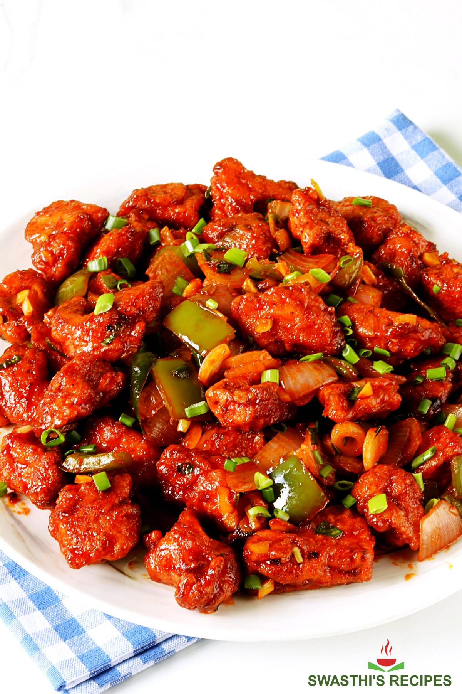

Chilli Chicken is an Indo-Chinese dish featuring bite-sized chicken pieces that are marinated, deep-fried until crispy, and then tossed in a spicy, tangy, and savory sauce.
Key Steps to Prepare
- Marinate: Coat 500g boneless chicken with soy sauce, egg, cornflour, all-purpose flour, ginger-garlic paste, black pepper, and salt. Let it rest for 30 minutes.
- Fry: Deep-fry the coated chicken pieces in batches until golden brown and crisp. Drain excess oil.
- Make Sauce: In a wok, sauté garlic, ginger, green chilies, onions, and bell peppers. Add soy sauce, chili sauce, tomato ketchup, vinegar, and a cornflour slurry to thicken.
- Combine: Toss the fried chicken into the sauce, ensuring it is evenly coated. Garnish with spring onions and serve hot.
Are some Common Variations
- Dry version: The sauce is cooked until fully evaporated, leaving only the crispy chicken coated in spices.
- Gravy Version: More liquid (water or stock) is added to the sauce base, creating a thicker gravy that coats the chicken.
- Creamy White Chicken Chili: Distinct from Indo-Chinese Chilli Chicken, this is a creamy soup made with white meat chicken, beans, poblano peppers, and jalapeños.
